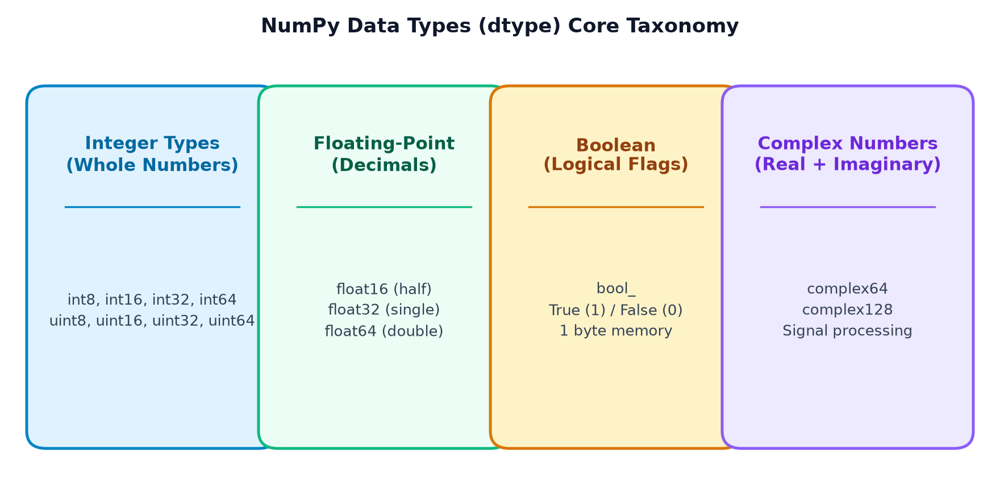
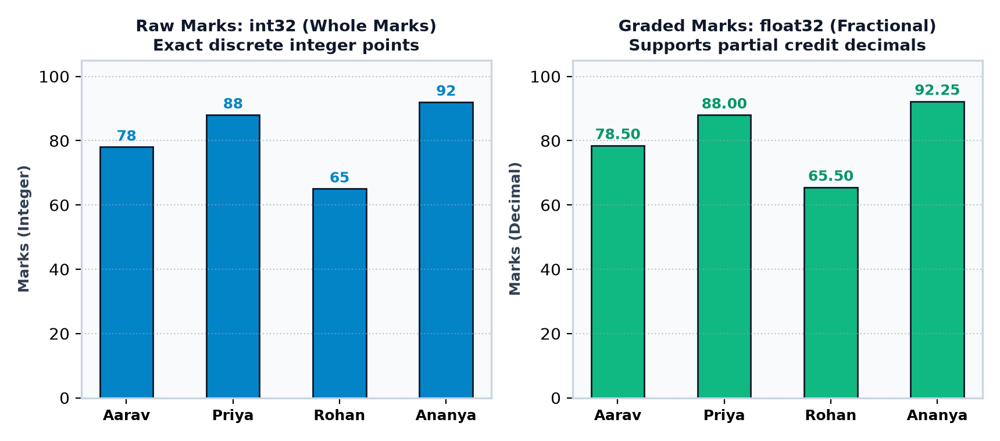
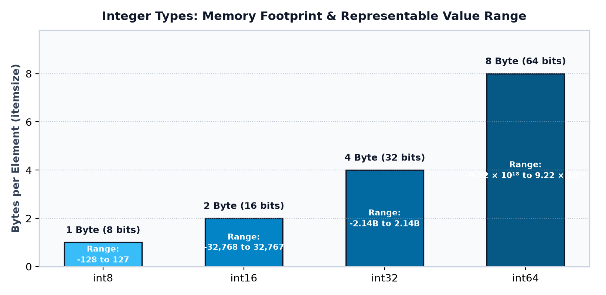
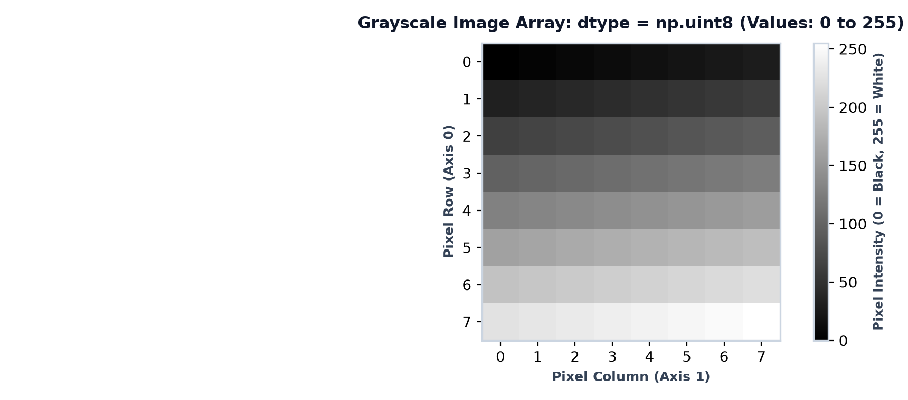
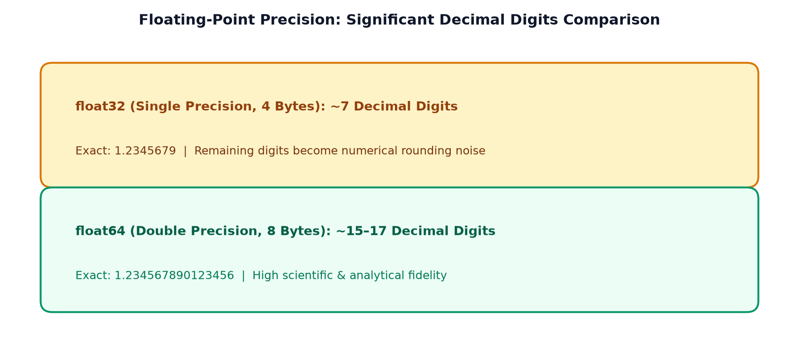
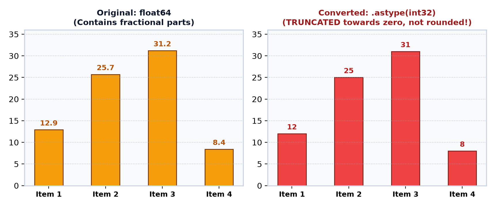
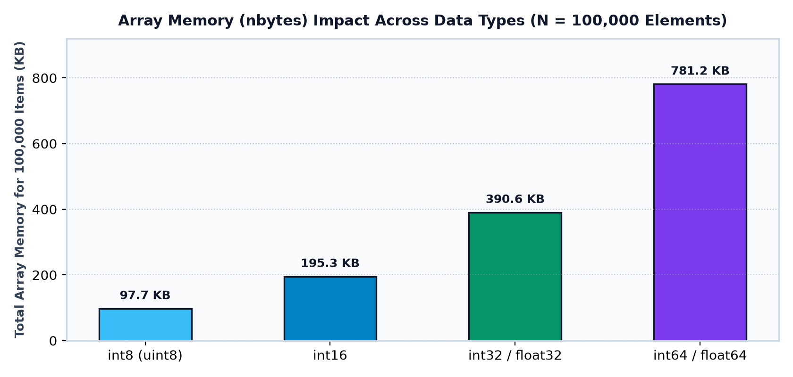
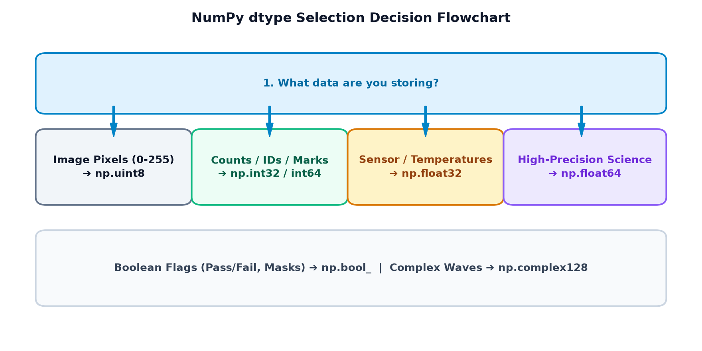

Topic 4 — Array Data Types & dtype
Master data representation and memory control in NumPy! Seekheiye ki dtype kya hota hai,
integers (int8 se int64, aur images ke liye uint8), floating-point precision
(float16 se float64), boolean flags, complex numbers, automatic type promotion,
safe conversion using astype(), memory calculations with itemsize aur nbytes,
aur ek complete Smart Data Type Explorer mini-project.
Goals Learning Objectives
Is topic ke end tak aap in sabhi core concepts par confident grip hasil kar lenge:
- Concept of Data Type: Samajhna ki NumPy me data type ka exact meaning kya hai aur ye memory me numbers ko kaise encode karta hai.
- Role of dtype: Har
ndarrayke.dtypeattribute ko inspect karna aur uske behavior ko samajhna. - Python vs. NumPy Types: Python ke dynamic variable types aur NumPy ke fixed-size C-level numeric types ke beech fundamental difference.
- Integer Family: Signed integers (
int8,int16,int32,int64) aur image pixels ke liye unsigneduint8(0 se 255). - Floating-Point Family: Decimal precision ki limitations (
float16,float32,float64) aur IEEE 754 approximations. - Boolean Arrays:
bool_flags ka use karke attendance aur conditional masks create karna. - Complex Numbers: Signal processing ke liye
complex64aurcomplex128arrays create karke.realaur.imagaccess karna. - Type Promotion: Samajhna ki jab mixed data types ek sath aate hain toh NumPy unhe kaise promote karta hai.
- Explicit dtype Declaration: Array creation ke time
dtype=...pass karke exact precision control karna. - Memory Inspection:
itemsize(bytes per element) aurnbytes(total data bytes) calculate karna. - Type Conversion with astype(): Arrays ko naye types me safely cast karna aur truncation vs. rounding ke rules samajhna.
- Optimal dtype Selection: Real-world scenarios (marks, money, sensor readings, pixels) ke liye perfect dtype chunna.
- Data Loss Awareness: Unintentional overflow aur precision loss ke risks se bachna.
01 Opening Hook — Why Does dtype Matter?
Imagine kijiye teen alag-alag digital systems jo real world me daily kaam karte hain:
- Ek School ka Report Card System: Yahan students ke exam marks store hote hain:
[85, 92, 76]. Ye hamesha whole numbers hote hain. - Ek Weather Monitoring Station: Yahan temperature readings store hoti hain:
[28.5, 31.2, 29.8]. Yahan decimals hona mandatory hai, kyunki 0.1 degree ka farq bhi matter karta hai. - Ek Smartphone Camera Sensor: Har photo ke millions of pixels hote hain, jinki intensity
0(pure black) se255(pure white) ke beech hoti hai.
Teeno systems numbers ke sath kaam kar rahe hain, lekin unki data requirements aur memory limitations bilkul alag hain! Agar hum camera ke pixel values ke liye 64-bit float use karenge toh image 8 guna zyada RAM legi. Aur agar temperature ke liye integer use karenge toh decimal precision loose ho jayegi.
Yahi reason hai ki NumPy me dtype (Data Type) sabse important foundation hai.
Ye batata hai ki har number memory me kitne bits lega aur usse kaise interpret kiya jayega.
| Real-Life Data | Real Example | Possible NumPy dtype | Reason for Choice |
|---|---|---|---|
| Student Exam Marks | 85, 92, 76 |
int32 ya uint8 |
Whole numbers, positive range 0–100 |
| Atmospheric Temperature | 28.5, 31.2, 29.8 |
float32 ya float64 |
Decimal precision required |
| Student Attendance Flag | True, False |
bool_ |
Binary state (Present/Absent) |
| Image Pixel Intensity | 0 se 255 |
uint8 |
Compact 1-byte storage (0–255) |
| Audio & Radar Signals | 3 + 4j |
complex128 |
Real + Imaginary phase values |
02 What Is a Data Type? (Container Analogy)
Ek simple analogy se sochiye: aapke kitchen me alag-alag cheezon ke liye alag dabbe (containers) hote hain. Masale ke liye chhota container, chawal ke liye bada container, aur doodh ke liye liquid bottle! Agar aap doodh ko cardboard box me rakhne ki koshish karenge toh leak ho jayega.
Bilkul isi tarah, computer memory me numbers ko rakhne ke liye NumPy alag-alag containers provide karta hai:
- Integer (
int): Whole numbers bina kisi decimal ke (e.g.,10, -5, 100). - Floating-Point (
float): Fractional numbers decimals ke sath (e.g.,3.14, -0.05, 99.9). - Boolean (
bool): Sirf do values:TrueyaFalse. - Complex: Aise numbers jisme Real aur Imaginary parts hote hain (e.g.,
2 + 3j). - String (
str): Text data (e.g.,"Aarav", "Pass").
import numpy as np
# Student marks in a Python list
marks = np.array([78, 85, 92, 67])
print("Marks array:", marks)
print("Detected dtype:", marks.dtype)Code Explanation: NumPy ne automatically dekha ki list ke sabhi elements integers hain, isliye usne is array ko 64-bit integer type assign kiya.
import numpy as np
# Ambient weather temperatures in degrees Celsius
temperatures = np.array([28.5, 30.2, 29.8, 31.4])
print("Temperatures:", temperatures)
print("Detected dtype:", temperatures.dtype)
03 Understanding the .dtype Attribute
Jab bhi aap kisi NumPy array ko create karte hain, toh uske paas ek built-in attribute hota hai jise .dtype kehte hain.
Ye attribute batata hai ki array ke andar stored elements ka data type kya hai:
array.dtypeimport numpy as np
marks = np.array([75, 88, 91])
print("Array:", marks)
print("Data type:", marks.dtype)import numpy as np
temperatures = np.array([24.5, 27.8, 30.1])
print("Array:", temperatures)
print("Data type:", temperatures.dtype)[10, "Hello", 3.5]). Lekin NumPy array hamesha homogeneous hota hai! Har element ka data type strictly identical hona chahiye taaki CPU fast vector calculations kar sake.

04 Integer Data Types (int8 to int64 & uint8)
NumPy me integers do main categories me aate hain:
- Signed Integers (
int8, int16, int32, int64): Ye positive aur negative dono numbers ko store kar sakte hain. Inka first bit sign (+ ya -) represent karta hai. - Unsigned Integers (
uint8, uint16, uint32, uint64): Ye sirf zero aur positive numbers store karte hain. Kyunki inme negative numbers nahi hote, inki positive range double ho jati hai!
| NumPy Type | Bit Width | Bytes (itemsize) | Representable Range | Typical Real-World Use Case |
|---|---|---|---|---|
np.int8 |
8 bits | 1 Byte | -128 se 127 | Small counters, audio sample deltas |
np.uint8 |
8 bits | 1 Byte | 0 se 255 | Computer Vision & Image Pixels (RGB) |
np.int16 |
16 bits | 2 Bytes | -32,768 se 32,767 | CD-quality audio waveforms, sensor raw data |
np.int32 |
32 bits | 4 Bytes | -2,147,483,648 se 2,147,483,647 (~2.14 Billion) | Student marks, general counting, database IDs |
np.int64 |
64 bits | 8 Bytes | -9.22 × 10¹⁸ se 9.22 × 10¹⁸ (~9.2 Quintillion) | Large financial transactions, nanosecond timestamps |
import numpy as np
for dtype in [np.int8, np.int16, np.int32, np.int64]:
arr = np.array([10, 20, 30], dtype=dtype)
print(f"{dtype.__name__:<8} | dtype: {str(arr.dtype):<6} | Bytes: {arr.itemsize} | Array: {arr}")import numpy as np
# 4 sample grayscale pixels: 0 (black), 64 (dark gray), 128 (gray), 255 (white)
pixels = np.array([0, 64, 128, 255], dtype=np.uint8)
print("Pixel intensities:", pixels)
print("Data type:", pixels.dtype)
print("Bytes per pixel:", pixels.itemsize)int8 me 128 store karne ki koshish karenge, toh wo overflow ho kar -128 ban sakta hai! NumPy version aur operations ke hisab se ye warning de sakta hai ya silent overflow kar sakta hai. Isliye hamesha safe range chuniye!


05 Floating-Point Data Types (float16, float32, float64)
Jab humein decimals ki zaroorat hoti hai, toh floating-point numbers ka use hota hai:
np.float16(Half precision): 2 Bytes (16 bits). Rare use cases (e.g., Deep Learning models me GPU memory bachane ke liye). Precision sirf ~3–4 decimal digits hoti hai.np.float32(Single precision): 4 Bytes (32 bits). Games, graphics, aur machine learning models me standard choice hai. Precision ~7 decimal digits tak hoti hai.np.float64(Double precision): 8 Bytes (64 bits). Scientific simulations aur general data analysis me default standard hai. Precision ~15–17 decimal digits tak hoti hai.
import numpy as np
temperature = np.array([26.4, 29.7, 31.2], dtype=np.float32)
print("Temperature array:", temperature)
print("Dtype:", temperature.dtype)
print("Bytes per element:", temperature.itemsize)import numpy as np
a = np.array([1.23456789], dtype=np.float32)
b = np.array([1.23456789], dtype=np.float64)
print("float32 representation:", a)
print("float64 representation:", b)Detailed Breakdown: Notice kijiye ki float32 ne number ko 1.2345679 par round kar diya (sirf 7 significant digits preserved), jabki float64 ne exact 1.23456789 retain kiya!

06 Boolean and Complex Data Types
Numbers ke alawa, scientific computing me logical decisions aur mathematical phases ke liye specialized types hote hain:
1. Boolean Arrays (np.bool_)
Boolean type sirf True aur False store karta hai. Har boolean value memory me 1 byte occupy karti hai.
import numpy as np
# Attendance record: True = Present, False = Absent
attendance = np.array([True, False, True, True])
print("Attendance flags:", attendance)
print("Dtype:", attendance.dtype)
print("Total students present:", attendance.sum())Why sum() works: In NumPy, True internally evaluates to 1 and False evaluates to 0, allowing instant counting of matching items!
import numpy as np
marks = np.array([35, 67, 28, 81])
# Vectorized conditional comparison: passing mark is 40
passed = marks >= 40
print("Passed boolean array:", passed)
print("Dtype:", passed.dtype)2. Complex Numbers (complex64 & complex128)
Signal processing, quantum computing, aur AC electrical circuits me numbers me real aur imaginary dono parts hote hain:
import numpy as np
# Complex signal wave array (128-bit: two float64s combined)
signal = np.array([1 + 2j, 3 + 4j], dtype=np.complex128)
print("Signal array:", signal)
print("Dtype:", signal.dtype)
print("Real component:", signal.real)
print("Imaginary component:", signal.imag)import numpy as np
# complex64 uses two float32 values (4 bytes real + 4 bytes imaginary = 8 bytes total)
audio_freq = np.array([5.0 + 1.5j, -2.0 + 0.5j], dtype=np.complex64)
print("Audio frequencies:", audio_freq)
print("Shape:", audio_freq.shape)
print("Itemsize:", audio_freq.itemsize, "bytes")07 What Happens When Data Types Are Mixed? (Type Promotion)
Agar aap ek hi array me integers, decimals, aur booleans mix kar denge toh kya hoga? Kyunki NumPy array homogeneous hota hai, NumPy Type Promotion (Upcasting) rules apply karta hai:
import numpy as np
# Mixed: 10 and 30 are integers, but 20.5 is a float
values = np.array([10, 20.5, 30])
print("Promoted array:", values)
print("Resulting dtype:", values.dtype)Explanation: NumPy ne dekha ki integers ko bina data loss ke float me convert kiya ja sakta hai (10 → 10.0), isliye sabhi elements ko float64 me promote kar diya.
import numpy as np
# Mixed: True (boolean), 1 and 0 (integers)
mixed_bool = np.array([True, 1, 0])
print("Array:", mixed_bool)
print("Resulting dtype:", mixed_bool.dtype)import numpy as np
# Mixed: Numbers and Text string
mixed_str = np.array([10, "CodeVerse", 30])
print("String-converted array:", mixed_str)
print("Dtype:", mixed_str.dtype)<U21), tab aap unpar mathematical operations jaise +, mean(), ya matrix multiplication nahi kar sakte! Kabhi bhi numbers aur text ko galti se mix mat kijiye.
08 Explicitly Choosing dtype
Automatic type guessing par rely karne ki jagah, professional data scientists hamesha explicit dtype specify karte hain:
np.array(data, dtype=desired_type)import numpy as np
marks = np.array([75, 88, 93], dtype=np.int32)
print("Marks:", marks)
print("Explicit dtype:", marks.dtype)
print("Memory per element:", marks.itemsize, "bytes")import numpy as np
prices = np.array([99.50, 149.99, 250.75], dtype=np.float64)
print("Prices:", prices)
print("Dtype:", prices.dtype)decimal.Decimal use karna chahiye!
09 Converting Data Types with astype()
Agar aapke paas already ek array ban chuka hai aur aap uske elements ka data type badalna chahte hain,
toh NumPy ka .astype() method use hota hai.
Key Rule: astype() original array ko in-place modify nahi karta! Ye hamesha converted elements ka ek naya array copy return karta hai.
import numpy as np
original = np.array([12.9, 25.7, 31.2])
converted = original.astype(np.int32)
print("Original:", original)
print("Converted:", converted)
print("Original dtype:", original.dtype)
print("Converted dtype:", converted.dtype)12.9 convert hokar 12 bana, 13 nahi!
.astype(int) decimal values ko truncate (drop) karta hai, round nahi karta!
Agar rounding chahiye, toh pehle np.round() use kijiye.
import numpy as np
scores = np.array([75, 88, 91], dtype=np.int32)
scores_float = scores.astype(np.float64)
print("Integer scores:", scores)
print("Float scores: ", scores_float)
print("New dtype: ", scores_float.dtype)
10 itemsize and Memory Usage (nbytes)
Data science me jab aap millions of data points ke sath kaam karte hain, toh memory footprint calculate karna crucial hota hai. NumPy do primary attributes deta hai:
arr.itemsize: Ek single element memory me kitne bytes leta hai.arr.nbytes: Array ke sabhi elements milkar total kitne raw data bytes consume karte hain (Formula:size × itemsize).
import numpy as np
for dtype in [np.int8, np.int16, np.int32, np.int64]:
arr = np.array([1, 2, 3, 4, 5], dtype=dtype)
print(f"{str(arr.dtype):<6} | itemsize: {arr.itemsize}B | Total nbytes: {arr.nbytes}B")import numpy as np
# 4 continuous temperature readings from an IoT sensor
sensor_data = np.array([21.4, 22.1, 22.8, 23.0], dtype=np.float32)
print("Sensor readings:", sensor_data)
print("Dtype:", sensor_data.dtype)
print("Bytes per element (itemsize):", sensor_data.itemsize)
print("Total buffer memory (nbytes):", sensor_data.nbytes, "bytes")
11 Choosing the Right dtype (Decision Matrix)
Kaunsa data type kab choose karein? Ye quick decision chart aapko real-world projects me guide karega:
| Nature of Data | Value Range | Recommended dtype | Why this choice? |
|---|---|---|---|
| Computer Vision Image Pixels | 0 se 255 | np.uint8 |
Maximum memory efficiency for millions of pixels |
| Student Marks / Exam Scores | 0 se 100 | np.int32 ya np.uint8 |
Compact integer representations without fractions |
| Physical Sensors (Temp, Humidity) | -50.0 se +100.0 | np.float32 |
Decimal accuracy with half the RAM of float64 |
| Financial & Scientific Data | Any real number | np.float64 |
High precision (~15–17 decimal digits) |
| Presence / Filtering Masks | True / False | np.bool_ |
Direct vectorized boolean indexing |
| Signal Waveforms / Radio | Real + Imaginary | np.complex128 |
Phase and magnitude preservation |

12 Common Beginner Mistakes & How to Avoid Them
Incorrect Assumption: Python ka standard int arbitrarily large numbers handle kar leta hai, toh NumPy ka int32 bhi unlimited numbers handle kar lega.
Reality: NumPy integers fixed C-level memory (e.g. 32 bits = max 2.14 Billion) use karte hain. Agar limit cross hogi toh overflow ho jayega!
Correction: Extremely large counts ke liye np.int64 choose kijiye.
Incorrect Assumption: np.array([1, 2, 3]) hamesha har operating system par exactly int64 banega.
Reality: 32-bit systems ya older Windows C-compiler configurations par default integer int32 ho sakta hai.
Correction: Cross-platform reproducibility ke liye hamesha explicit dtype=np.int64 pass kijiye.
Incorrect Assumption: float64 har decimal fraction ko perfectly accurately store karta hai.
Reality: Binary floating-point (IEEE 754) me fractions jaise 0.1 exact binary me represent nahi ho sakte. 0.1 + 0.2 == 0.3 evaluates to False!
Correction: Floating-point equality compare karne ke liye np.allclose(a, b) ya np.isclose() use kijiye.
Incorrect Assumption: Memory bachane ke liye student exam score (e.g., 200 marks) ko np.int8 me store karna.
Reality: int8 max 127 tak hi ja sakta hai. 200 store karne par wrap-around overflow ho kar -56 ban jayega!
Correction: Marks up to 255 ke liye np.uint8 ya safe np.int16 use kijiye.
Incorrect Assumption: np.array([9.9]).astype(int) gives [10].
Reality: astype(int) fractional part ko truncate (cut) karta hai, isliye result [9] aayega!
Correction: Rounding ke liye pehle np.round() call kijiye: np.round(arr).astype(int).
Incorrect Assumption: Display formatting ke liye poore array ko .astype(str) me convert kar dena.
Reality: String array bante hi saari fast vectorized mathematical operations block ho jati hain.
Correction: Array ko numbers me hi rakhiye, sirf print karte waqt formatted string banayein.
Incorrect Assumption: float64 ko float32 ya int me convert karke wapas convert karne par original values laut aayengi.
Reality: Once decimals or precision are truncated, original values are permanently erased.
Correction: Agar original data aage calculations ke liye chahiye, toh converted copy ko alag variable me rakhein.
Incorrect Assumption: Deep learning me float32 chalta hai toh GPS satellite navigation coordinates me bhi float32 chal jayega.
Reality: GPS latitude/longitude me 7 decimal places accuracy ke baad float32 me meters ka error aa sakta hai!
Correction: High-precision coordinates ke liye hamesha float64 use kijiye.
Incorrect Assumption: arr.nbytes array ka exact total RAM usage batata hai.
Reality: nbytes sirf array ke raw numerical buffer ka size hai. Python ndarray wrapper object ka metadata overhead alag hota hai.
Correction: Total Python object footprint ke liye sys.getsizeof(arr) check kijiye.
Incorrect Assumption: np.array(["10", "hello"]).astype(int) me invalid string 0 ban jayega.
Reality: NumPy instantly throws ValueError: invalid literal for int()!
Correction: Clean data before converting, ya pandas/utility functions se invalid values ko NaN me map kijiye.
13 Interactive Learning Workshops
🧪 Workshop 1: Dtype & Memory Inspector Lab Interactive
Neeche diye gaye buttons par click karke dekhiye ki 1,000 numbers ka array alag-alag dtypes me kitni RAM leta hai:
✂️ Workshop 2: Safe Type Casting & Truncation Simulator Casting Lab
Observe kijiye ki .astype() decimal numbers ko integer me convert karte waqt kaise truncate karta hai:
14 Practical Mini-Project — Smart Data Type Explorer
Aaiye ek complete, real-world Python utility banate hain: Smart Data Type Explorer! Is project me hum 3 alag datasets inspect karenge, unke memory footprint analyze karenge, aur safe conversions execute karenge.
import numpy as np
# 1. Setup Realistic Heterogeneous Datasets
student_marks = np.array([78, 85, 92, 67, 88], dtype=np.uint8)
sensor_temps = np.array([28.4, 30.1, 29.5, 31.2, 27.9], dtype=np.float32)
image_pixels = np.array([0, 45, 120, 200, 255], dtype=np.uint8)
datasets = [
("Student Marks", student_marks, "Whole percentages (0-100)"),
("Sensor Temps", sensor_temps, "Decimal precision readings"),
("Image Pixels", image_pixels, "Grayscale intensities (0-255)")
]
print("==================================================")
print("SMART DATA TYPE EXPLORER AUDIT REPORT")
print("==================================================")
for name, arr, reason in datasets:
print(f"\nDataset: {name}")
print(f" - Shape: {arr.shape}")
print(f" - Dtype: {arr.dtype}")
print(f" - Itemsize: {arr.itemsize} byte(s) per element")
print(f" - Total RAM: {arr.nbytes} bytes")
print(f" - Design Rationale: {reason}")
# 2. Large Scale Memory Optimization Simulation (10,000 IoT samples)
N = 10000
temp_f64 = np.zeros(N, dtype=np.float64)
temp_f32 = temp_f64.astype(np.float32)
saved_bytes = temp_f64.nbytes - temp_f32.nbytes
saved_pct = (saved_bytes / temp_f64.nbytes) * 100
print("\n--- MEMORY SAVINGS BENCHMARK (10,000 SAMPLES) ---")
print(f"float64 buffer: {temp_f64.nbytes / 1024:.1f} KB")
print(f"float32 buffer: {temp_f32.nbytes / 1024:.1f} KB")
print(f"RAM Saved: {saved_bytes / 1024:.1f} KB ({saved_pct:.0f}% Reduction!)")- Audio Waveform Memory Inspector: Ek 44,100-sample audio array ko
int16aurfloat32me store karke memory footprint compare kijiye. - Safe Decimal Truncation Guard: Ek function likhiye jo check kare ki kya float array ko integer me convert karne se data loss ho raha hai (e.g.
np.any(arr != arr.astype(int))).
15 Practice, Revision & Knowledge Challenges
Part A: 8 Output Prediction Questions
Q1: What will np.array([1, 2, 3.0]).dtype return?
Answer: float64
Explanation: Because 3.0 is a float, NumPy automatically upcasts the entire array to floating-point.
Q2: What is the output of np.array([15.8, 20.1]).astype(np.int32)?
Answer: [15 20]
Explanation: .astype() truncates decimal fractions towards zero (does not round).
Q3: What will np.array([True, False, True]).sum() return?
Answer: 2
Explanation: True counts as 1 and False counts as 0.
Q4: What is the itemsize of an array with dtype=np.float32?
Answer: 4
Explanation: 32 bits = 32 / 8 = 4 bytes per element.
Q5: What does np.zeros(10, dtype=np.int16).nbytes return?
Answer: 20
Explanation: 10 elements × 2 bytes per element = 20 bytes total.
Q6: What is the dtype of np.array([True, 0, 5])?
Answer: int64 (or int32 depending on OS standard C long)
Explanation: Booleans are promoted to integers when mixed with non-boolean integer numbers.
Q7: What does np.array([1 + 3j]).real return?
Answer: [1.]
Explanation: .real extracts the real numeric component as a float.
Q8: What happens when you run np.array([250], dtype=np.int8)?
Answer: Overflow occurs (value wraps around to -6 in two's complement).
Explanation: int8 range is -128 to 127. 250 exceeds the upper bound.
Part B: 6 Short Coding Exercises
Exercise 1: Create an Integer Array for Student Marks
import numpy as np
marks = np.array([88, 92, 79, 95], dtype=np.int32)
print("Marks:", marks, "Dtype:", marks.dtype)Exercise 2: Create a Float Array for Weather Readings
import numpy as np
temps = np.array([29.4, 30.1, 28.7], dtype=np.float32)
print("Temps:", temps, "Dtype:", temps.dtype)Exercise 3: Boolean Array Based on Passing Threshold
import numpy as np
marks = np.array([45, 32, 78, 29, 60])
passed = marks >= 35
print("Passed flags:", passed) # [ True False True False True]Exercise 4: Convert Integer Array into Float Array
import numpy as np
int_arr = np.array([10, 20, 30], dtype=np.int32)
flt_arr = int_arr.astype(np.float64)
print(flt_arr, flt_arr.dtype)Exercise 5: Compare Storage Size of Two Arrays
import numpy as np
a = np.zeros(1000, dtype=np.float64)
b = np.zeros(1000, dtype=np.float32)
print(f"a: {a.nbytes} bytes vs b: {b.nbytes} bytes") # 8000 vs 4000Exercise 6: Choose Suitable Dtype for Grayscale Pixels
import numpy as np
pixels = np.array([0, 128, 255], dtype=np.uint8)
print("Pixels:", pixels, "Itemsize:", pixels.itemsize)Part C: 5 Debugging Challenges
Debug 1: Overflowing uint8 with Negative Numbers
Broken Code: np.array([-5, 10], dtype=np.uint8)
Error/Bug: uint8 cannot hold negative values. -5 wraps to 251!
Fix: Use signed integer: dtype=np.int8 or int16.
Debug 2: Missing Assignment in astype()
Broken Code:
arr = np.array([1.5, 2.5])
arr.astype(int)
print(arr.dtype) # Still float64!
Fix: astype() returns a copy. Must assign back: arr = arr.astype(int).
Debug 3: Converting Invalid Text to Numeric
Broken Code: np.array(["10", "NA"]).astype(int)
Error: ValueError: invalid literal for int()
Fix: Clean missing values or map 'NA' to 0/NaN before typecasting.
Debug 4: Accidental String Promotion
Broken Code: arr = np.array([10, 20, "30"]); arr.mean() throws TypeError!
Fix: Ensure all items are numeric: arr = np.array([10, 20, 30]).
Debug 5: Assuming float16 Is Supported in High-Precision Matrix Inversion
Broken Code: Attempting numerical matrix calculations with float16.
Bug: Severe underflow and precision collapse.
Fix: Use standard float64 for linear algebra transformations.
Part D: 6 Conceptual MCQs
1. Which dtype is most memory-efficient for 8-bit image pixels (0 to 255)?
A) np.int8 | B) np.uint8 | C) np.float32 | D) np.int16
Answer: B
2. What does .astype(int) do to the decimal value 9.99?
A) Rounds to 10 | B) Truncates to 9 | C) Throws ValueError | D) Returns 9.0
Answer: B
3. How many bytes does a single element of float32 consume?
A) 2 bytes | B) 4 bytes | C) 8 bytes | D) 32 bytes
Answer: B
4. What is the value range of np.int8?
A) 0 to 255 | B) -128 to 127 | C) -32,768 to 32,767 | D) -256 to 255
Answer: B
5. If you mix [10, 20.5, True] in np.array(), what is the resulting dtype?
A) int32 | B) bool | C) float64 | D) object
Answer: C
6. What does array.nbytes represent?
A) Total array elements | B) Bytes per element | C) Total raw data bytes | D) Dimension count
Answer: C
Part E: 3 Real-Life Mini-Challenges
Mini-Challenge 1: Student Marks Data Inspector
Scenario: You are receiving raw marks as float strings: ["78.5", "85.0", "92.5"]. Convert them to float32, compute average, and convert to integer whole marks.
import numpy as np
raw_strings = np.array(["78.5", "85.0", "92.5"])
float_marks = raw_strings.astype(np.float32)
print("Float Marks:", float_marks)
print("Class Average:", np.mean(float_marks))
int_whole = np.round(float_marks).astype(np.int32)
print("Whole Marks:", int_whole)Mini-Challenge 2: Weather Sensor Data Type Selector
Scenario: An IoT sensor records 1,000,000 temperature readings. Calculate the memory consumed if stored as float64 vs float32.
import numpy as np
n = 1000000
f64_bytes = n * 8
f32_bytes = n * 4
print(f"float64 memory: {f64_bytes / (1024*1024):.2f} MB")
print(f"float32 memory: {f32_bytes / (1024*1024):.2f} MB")
print(f"RAM saved: {(f64_bytes - f32_bytes) / (1024*1024):.2f} MB")Mini-Challenge 3: Image Pixel Storage Explorer
Scenario: A 1080p Full HD image has 1920 × 1080 = 2,073,600 pixels across 3 color channels (RGB). Compare memory footprint for uint8 vs default int64.
import numpy as np
total_pixels = 1920 * 1080 * 3
uint8_mem = total_pixels * 1
int64_mem = total_pixels * 8
print(f"Full HD Image as uint8: {uint8_mem / (1024*1024):.2f} MB")
print(f"Full HD Image as int64: {int64_mem / (1024*1024):.2f} MB")
print(f"Wasted RAM if wrong dtype used: {(int64_mem - uint8_mem) / (1024*1024):.2f} MB!")NumPy Topic 4 Quick Reference Cheat Sheet
| dtype Code | Name | itemsize | Value Range | Common Use Case |
|---|---|---|---|---|
np.uint8 |
Unsigned 8-bit int | 1 Byte | 0 se 255 | Image pixels, byte buffers |
np.int8 |
Signed 8-bit int | 1 Byte | -128 se 127 | Small delta counters |
np.int16 |
Signed 16-bit int | 2 Bytes | -32,768 se 32,767 | Raw audio waveforms |
np.int32 |
Signed 32-bit int | 4 Bytes | ~±2.14 Billion | Standard integer counting |
np.int64 |
Signed 64-bit int | 8 Bytes | ~±9.22 Quintillion | Large financial timestamps |
np.float32 |
Single precision float | 4 Bytes | ~7 decimal digits | Machine learning, graphics |
np.float64 |
Double precision float | 8 Bytes | ~15–17 decimal digits | Standard scientific computing |
np.bool_ |
Boolean flag | 1 Byte | True (1) / False (0) | Filtering masks, conditionals |
np.complex128 |
Complex number | 16 Bytes | Two float64s | Signal & radar analysis |
Self-Paced Mastery Checklist
- ✅ Mujhe samajh aa gaya ki NumPy arrays homogeneous hote hain aur fixed-size C memory use karte hain.
- ✅ Main
arr.dtype,arr.itemsize, aurarr.nbytesko inspect aur interpret kar sakta hoon. - ✅ Mujhe
int8,int16,int32, aurint64ke memory aur range difference pata hain. - ✅ Main janta hoon ki images ke pixels ke liye
np.uint8(0 se 255) kyun best choice hai. - ✅ Main
float32aurfloat64ke decimal precision difference ko clearly explain kar sakta hoon. - ✅ Mujhe pata hai ki
bool_arrays par.sum()karne seTruevalues count ho jati hain. - ✅ Main samajhta hoon ki mixed data aane par NumPy kaise automatically Type Promotion (upcasting) karta hai.
- ✅ Main
np.array(data, dtype=...)se explicitly memory aur precision control kar sakta hoon. - ✅ Mujhe pata hai ki
arr.astype(int)decimal ko truncate karta hai, round nahi karta. - ✅ Maine Smart Data Type Explorer mini-project aur practice exercises solve kar liye hain!